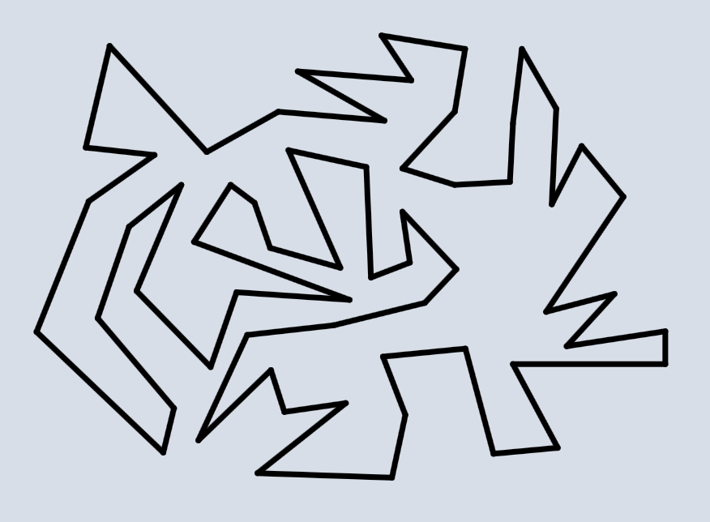

Acerca de este sitio
Sobre el contenido
En este sitio encontrarás demostraciones, animaciones, herramientas interactivas y recursos en general, así como una presentación de buena parte de los conceptos necesarios para introducirte en el mundo de los problemas de inscripción de polígonos y sus soluciones.
Sobre este proyecto
Por medio de este sitio web pretendemos invitar a estudiantes de licenciatura en matemáticas y áreas afines, y a cualquier persona que tenga interés por las matemáticas, a acercarse al estudio de la topología.
Hemos elegido el problema del cuadrado inscrito y, más generalmente, los problemas de inscripción de polígonos como tema central de este proyecto, pues son problemas cuyo planteamiento es muy sencillo e intuitivo y las soluciones –en muchos casos parciales– que se han planteado hasta la fecha dejan entrever de manera clara el quehacer de la topología, así como el interesante juego que existe entre topología y geometría.
Los problemas de inscripción de polígonos se encuentran justo en ese punto en el confluyen la topología y la geometría, de forma más precisa, estos problemas se enfocan en determinar qué tanto una propiedad puramente topológica –por ejemplo, ser una curva de Jordan– determina una propiedad geométrica –por ejemplo, contener a los vértices de un cuadrado–, dicho de otro modo, en estos problemas el objetivo es determinar qué tanto la forma de un objeto puede determinar la presencia de una figura.
Parte de este proyecto se realiza dentro del programa de servicio social Digitalización y creación de recursos para la investigación topológica y docencia en el área de topología como respuesta a la pandemia del virus Sars-Cov-2, en forma de página web interactiva en español de la Facultad de Ciencias de la Universidad Nacional Autónoma de México en el Centro de Investigación en Ciencias de la Universidad Autónoma del Estado de Morelos.